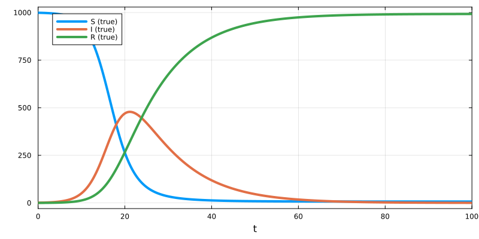
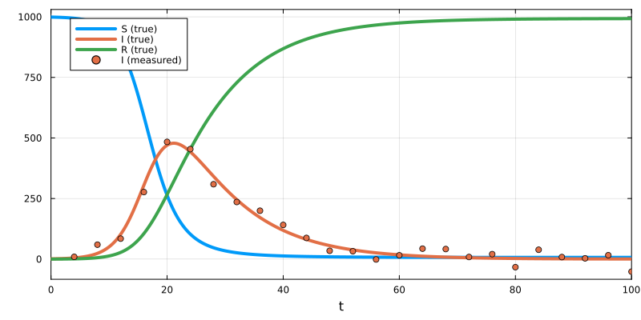
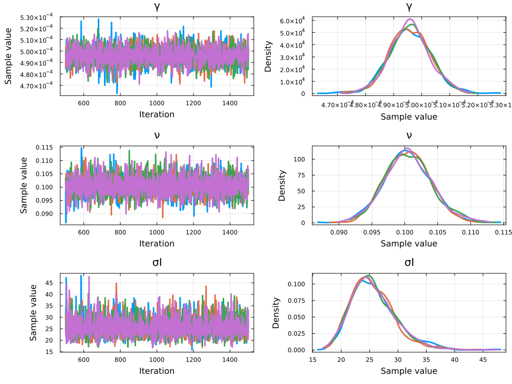
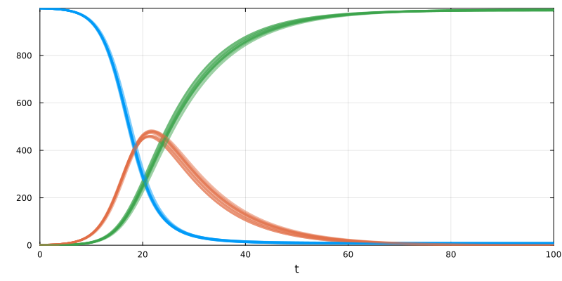

Bayesian Parameter Fitting for ODEs using Turing.jl
Environment setup and package installation
The following code sets up an environment for running the code on this page.
using Pkg
Pkg.activate(".")
Pkg.add("Catalyst")
Pkg.add("Distributions")
Pkg.add("OrdinaryDiffEqDefault")
Pkg.add("Plots")
Pkg.add("StatsPlots")
Pkg.add("SymbolicIndexingInterface")
Pkg.add("Turing")Quick-start example
The following code provides a minimal example of how to infer parameter posteriors from data using the Turing.jl package.
# Create reaction network model (an SIR model).
using Catalyst
sir = @reaction_network begin
γ, S + I --> 2I
ν, I --> R
end
# Generate some (synthetic) data for the fitting procedure.
using Distributions, OrdinaryDiffEqDefault, Plots
t_measurement = 1.0:100.0
u0 = [:S => 999.0, :I => 1.0, :R => 0.0]
p_true = [:γ => 0.0003, :ν => 0.1]
oprob_true = ODEProblem(sir, u0, t_measurement[end], p_true)
sol_true = solve(oprob_true)
I_observed = sol_true(t_measurement; idxs = :I)
σI = 10.0
I_observed = [rand(Normal(I, σI)) for I in I_observed]
plot(sol_true; label = ["S (true)" "I (true)" "R (true)"])
plot!(t_measurement, I_observed; label = "I (measured)", color = 2, seriestype = :scatter)
# Create a Turing model. The `x ~ Distribution(...)` notation both defines priors on the parameters
# which posterior we wish to infer, and the likelihoods of the observables.
# If `x` is an undefined parameter, `x` becomes a prior for an estimated parameter, else,
# it is interpreted as an observable likelihood.
using Turing
@model function sir_model(I_observed, oprob_base, setp_oop, saveat)
# Defines the parameters we wish to estimate and their prior distributions.
γ ~ LogUniform(0.00001, 0.001)
ν ~ LogUniform(0.01, 1.0)
σI ~ LogUniform(0.1, 100.0)
# Simulate the model for parameter values γ, ν. Saves the solution at the measurement times.
p = setp_oop(oprob_base, [γ, ν])
oprob_base = remake(oprob_base; p)
sol = solve(oprob_base; saveat, verbose = false, maxiters = 10000)
# If simulation was unsuccessful, the likelihood is -Inf.
if !SciMLBase.successful_retcode(sol)
Turing.@addlogprob! -Inf
return nothing
end
# Computes the likelihood of the observations.
for idx in eachindex(I_observed)
I_observed[idx] ~ Normal(sol[:I][idx], σI)
end
end
# Estimates parameter posteriors through Markov Chain Monte Carlo.
import SymbolicIndexingInterface # Required for `setp_oop`.
n_steps = 1000
n_chains = 4
setp_oop = SymbolicIndexingInterface.setp_oop(oprob_true, [:γ, :ν])
model = sir_model(I_observed, oprob_true, setp_oop, t_measurement)
chain = sample(model, NUTS(), MCMCThreads(), n_steps, n_chains; progress = false)
# Plots the resulting chains and posteriors.
using StatsPlots
plot(chain)
In the previous sections, we described how to fit parameter values to data. These sections demonstrated so-called frequentist approaches, i.e. approaches where we attempt to find the single solution that fits the data best. An alternative is to instead use a Bayesian approach[1]. Here, we recognise that we cannot plausibly find the true parameter set, and instead attempt to accurately quantify our knowledge of the true parameter set as probability distributions. Another hallmark of Bayesian approaches is the incorporation of prior knowledge, i.e. we assume that we have some prior "guess" of what the parameter solution might be, which is incorporated into the inferred output distribution (also known as the posterior distribution). Generally, posterior distributions cannot be computed directly. However, so-called Markov Chain Monte Carlo (MCMC) methods can be used to generate samples from them. A correctly constructed MCMC method that is run for enough steps should provide a good estimate of the posterior distribution. Bayesian inference is advantageous in that it provides more information about the solution than frequentist approaches, which can also be used as a form of identifiability analysis. On the flip side, these methods are often more complicated and computationally intensive.
In Julia, Bayesian inference is primarily carried out using the Turing.jl package. In this tutorial, we give a brief introduction to Turing and show how to combine it with Catalyst to perform Bayesian inference for model parameters from data. A more thorough introduction to Turing can be found in its documentation. Finally, we note that PEtab (the primary package for fitting the parameters of ODEs) offers direct support for Bayesian inference. However, if you have an inverse problem that cannot be encoded using PEtab, a Turing-based workflow (as described below) is an alternative approach.
In frequentist parameter fitting, we can use a cost function based on likelihoods (as created by e.g. PEtab.jl) or something else (e.g. a sum of squared distances). Bayesian inference is more explicitly likelihood-based. Here, we assign each unknown parameter a prior distribution. Next, we assign each observed quantity an observation likelihood. Using these, the probability of observing our data can be computed for any potential parameter set, which in turn lets us infer the posterior distribution of the true parameter set.
Inferring parameter posterior distributions for an ODE model using Turing
For this example, we will consider a simple SIR model of an infectious disease.
using Catalyst
sir = @reaction_network begin
γ, S + I --> 2I
ν, I --> R
end\[ \begin{align*} \mathrm{S} + \mathrm{I} &\xrightarrow{\gamma} 2 \mathrm{I} \\ \mathrm{I} &\xrightarrow{\nu} \mathrm{R} \end{align*} \]
From an initial condition where only a small fraction of the population is in the infected state, the model exhibits a peak of infections, after which the epidemic subsides.
using OrdinaryDiffEqDefault, Plots
u0 = [:S => 999.0, :I => 1.0, :R => 0.0]
p_true = [:γ => 0.0005, :ν => 0.1]
oprob_true = ODEProblem(sir, u0, 100.0, p_true)
sol_true = solve(oprob_true)
plot(sol_true; label = ["S (true)" "I (true)" "R (true)"], lw = 4)
From this simulation, we generate synthetic measurements of the epidemic (on which we will demonstrate a Turing-based inference workflow). We make $25$, evenly spaced, measurements of the number of infected individuals ($I$). To these measurements we add some normally distributed noise (with mean at the true value and a standard deviation of $20$).
using Distributions
σI = 20.0
t_measurement = 4.0:4:100.0
I_observed = sol_true(t_measurement; idxs = :I)
I_observed = [rand(Normal(I, σI)) for I in I_observed]
plot!(t_measurement, I_observed; label = "I (measured)", color = 2, seriestype = :scatter)
Next, we are ready to create a Turing model/likelihood function (from which posteriors can be estimated). The Turing model has similarities to the loss function utilised for normal parameter fitting workflows, but with a few differences:
- The declaration is prepended with the
@modelmacro (which enables some specialised notation). - The function has no input parameter values. However, its input should contain all observed quantities (and also any other structures used within the likelihood function).
- All quantities whose posteriors we wish to infer (in our case the parameters) are declared within the function, together with their priors.
- The function does not return a loss value. Instead it uses a special notation to compute the likelihood of the observables, from which Turing can compute a total likelihood for each parameter set.
Here, we declare our parameters on the form p ~ Distribution(...) where the left-hand side is the parameter and the right-hand side is its prior distribution (any distribution defined within the Distributions.jl package can be used). The likelihood of observing each observable is defined in a similar manner, i.e. o ~ Distribution(...). The only difference is that the observables already have their values declared at the time of the o ~ Distribution(...) statement, while parameters are declared through the p ~ Distribution(...) notation.
In our case, we first declare each parameter and its prior. Next, we simulate the SIR model for a specific parameter set. Then, we compute the likelihood of observing our observables given the simulation.
using Turing, SymbolicIndexingInterface
setp_oop = SymbolicIndexingInterface.setp_oop(oprob_true, [:γ, :ν])
@model function sir_likelihood(I_observed, oprob_base, setp_oop, saveat)
# Defines the parameters we wish to estimate and their prior distributions.
γ ~ LogUniform(0.00001, 0.001)
ν ~ LogUniform(0.01, 1.0)
σI ~ LogUniform(0.1, 100.0)
# Simulate the model for parameter values γ, ν. Saves the solution at the measurement times.
p = setp_oop(oprob_base, [γ, ν])
oprob_base = remake(oprob_base; p)
sol = solve(oprob_base; saveat, verbose = false, maxiters = 10000)
# If simulation was unsuccessful, the likelihood is -Inf.
if !SciMLBase.successful_retcode(sol)
Turing.@addlogprob! -Inf
return nothing
end
# Computes the likelihood of the observations.
for idx in eachindex(I_observed)
I_observed[idx] ~ Normal(sol[:I][idx], σI)
end
endPrecompiling packages...
6707.1 ms ✓ Bijectors → BijectorsReverseDiffChainRulesExt
1 dependency successfully precompiled in 7 seconds. 158 already precompiled.Some specific comments regarding how we have declared the model above:
- Like for normal parameter fitting, we use the
maxiters = 10000(to prevent spending a long time simulating unfeasible parameter sets) andverbose = false(to prevent unnecessary printing of warning messages) arguments tosolve. - Again, we need to handle parameter sets where the model cannot be successfully simulated. Here, we use
Turing.@addlogprob! -Infto set a non-existent likelihood, andreturn nothingto stop further evaluation of the specific parameter set. - Just like for normal parameter fitting, we wish to fit parameters on a log scale. Here we do so by declaring log-scaled prior distributions.
- Here we assume that we (correctly) know that the noise is normally distributed. However, we assume that we do not know the standard deviation. Instead, we make the standard deviation a third parameter whose value we infer as part of the inference process. More complicated noise formulas can be used (and are sometimes even advisable[2]).
- Like for normal parameter fitting, we use SymbolicIndexingInterface's
setp_oopfunction to update the parameter values in each step (as this works well with automatic differentiation).
Finally, we can estimate the posterior distributions of all parameters. First we generate a Turing model from the likelihood function declared above. Here, we also provide the likelihood's input values (the observables and all other required inputs, such as the base ODEProblem). Next, we use Turing's sample function to compute the posteriors.
n_steps = 1000
n_chains = 4
sir_model = sir_likelihood(I_observed, oprob_true, setp_oop, t_measurement)
chain = sample(sir_model, NUTS(), MCMCThreads(), n_steps, n_chains; progress = false, verbose = false)┌ Warning: Only a single thread available: MCMC chains are not sampled in parallel
└ @ AbstractMCMC ~/.julia/packages/AbstractMCMC/C1aKp/src/sample.jl:544Here, sample's input is:
- The Turing model.
- The sampling method (here we use the No U-Turn Sampler, a type of Hamiltonian Monte Carlo sampler)
- The parallelisation approach (here we use
MCMCThreads, which parallelises through multithreading). - The number of steps to take in each chain.
- The number of parallel chains.
- Optional arguments disabling the printing of updates during the MCMC computation.
Additional options are discussed in Turing's documentation.
Turing contains a plotting interface for plotting the results:
using StatsPlots
plot(chain)
Here, for each parameter, the left-hand side shows the MCMC chains, and the right-hand side plots the posterior distributions (one for each of the four chains). Note that, due to the low number of data points, the posterior for σI does not necessarily center around the true value of $20$.
Encoding non-negativity in observables formulas
In biology, most quantities are non-negative, which is information that we wish to incorporate in our inference problem. This holds both for priors (i.e. we know that the inferred parameters are non-negative) and observables (i.e. we know that the observed quantities are non-negative). This can be encoded either by:
- Using a prior/observation formula where the distribution is strictly non-negative.
- Truncating the prior/observation formula distribution at zero.
In the previous example we used the former approach for our parameter priors, i.e. γ ~ LogUniform(0.00001, 0.001) is a strictly non-negative distribution, implying that γ is non-negative. However, for our observations we used I_observed[idx] ~ Normal(sol[:I][idx], σI). Here, Normal(sol[:I][idx], σI) suggests that a negative number of infected cases can be observed. While the way in which we generated our synthetic data means that this actually could happen, for real applications we might want to encode non-negativity in the distribution. A simple alternative is to truncate the distribution at zero using the truncated function. Here we can use
I_observed[idx] ~ truncated(Normal(sol[:I][idx], σI), 0.0, Inf)to create a version of our normal distribution that is truncated at 0 and infinity.
Accessing posterior information
Say that we want to sample a parameter set from the computed posterior distribution. Here, we can use the following syntax to sample a single vector with the values of γ, ν, and σI (in that order):
collect(chain.value[rand(1:n_steps), 1:3, rand(1:n_chains)])3-element Vector{Float64}:
0.00048621370778988306
0.09679460974951214
30.632410697200473We can use this to e.g. draw $10$ random parameter sets from the posterior distribution, simulate the model for these parameter sets, and plot the resulting ensemble simulation. For this, we will create an EnsembleProblem from our ODEProblem using the approach described here.
function prob_func(prob, _, _)
γ, ν = collect(chain.value[rand(1:n_steps), 1:2, rand(1:n_chains)])
remake(prob; p = [:γ => γ, :ν => ν])
end
eprob = EnsembleProblem(oprob_true; prob_func)
sols = solve(eprob; trajectories = 10)
plot(sols; color = [1 2 3], la = 0.5)
Here, we can see that all parameter sets sampled from the posterior yield very similar simulations.
Citations
If you use this functionality in your research, in addition to Catalyst, please cite the following paper to support the authors of the Turing.jl package.
@article{10.1145/3711897,
author = {Fjelde, Tor Erlend and Xu, Kai and Widmann, David and Tarek, Mohamed and Pfiffer, Cameron and Trapp, Martin and Axen, Seth D. and Sun, Xianda and Hauru, Markus and Yong, Penelope and Tebbutt, Will and Ghahramani, Zoubin and Ge, Hong},
title = {Turing.jl: a general-purpose probabilistic programming language},
year = {2025},
publisher = {Association for Computing Machinery},
address = {New York, NY, USA},
url = {https://doi.org/10.1145/3711897},
doi = {10.1145/3711897},
note = {Just Accepted},
journal = {ACM Trans. Probab. Mach. Learn.},
month = feb,
}